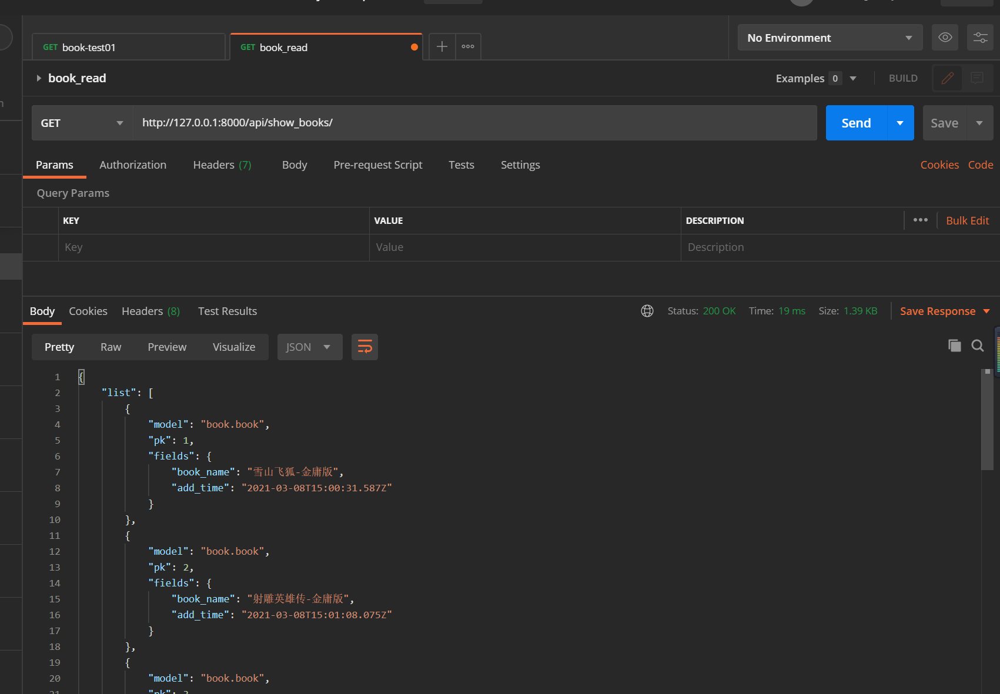

Contents
28.2. Django+vue前后端分离Demo¶
从零开始搭建Django+vue前后端分离项目
28.2.1. Django部分¶
1.环境准备¶
$ python --version
Python 3.7.0
18793@DESKTOP-PMJTNGI MINGW64 /d/0项目/book_project
$ python -m django --version
3.1.7
2.创建项目¶
## 方法1:
1.创建项目：django-admin startproject book_project
2.再新建app：
进入项目根目录：
cd book_project
python3 manage.py startapp book
## 方法2:
pycharm---推荐
3.后端准备¶
3.1 更改settings配置¶
3.1.1 更改数据库配置¶
在book_project下的settings.py配置文件中，把默认的sqllite3数据库换成我们的mysql数据库
DATABASES = {
'default': {
'ENGINE': 'django.db.backends.mysql',
'NAME': 'book_demo',
'HOST': '127.0.0.1',
'USER': 'root',
'PASSWORD': 'admin#123',
'PORT': '3306',
}
}
3.1.2 导入pymysql包¶
在项目setting文件同级__init__.py文件下加入
import pymysql
pymysql.version_info = (1, 4, 13, "final", 0)
pymysql.install_as_MySQLdb()
pip install -i https://pypi.doubanio.com/simple/ --trusted-host pypi.doutsnio.com pymysql
3.1.3 更改installed_apps¶
将创建的app加入到installed_apps里面
INSTALLED_APPS = [
'django.contrib.admin',
'django.contrib.auth',
'django.contrib.contenttypes',
'django.contrib.sessions',
'django.contrib.messages',
'django.contrib.staticfiles',
'book.apps.BookConfig',
'book'
]
3.2 创建model¶
models.py
from django.db import models
# Create your models here.
class Book(models.Model):
book_name = models.CharField(max_length=64)
add_time = models.DateTimeField(auto_now_add=True)
class Meta:
verbose_name = '书名'
verbose_name_plural = verbose_name
def __str__(self):
return self.book_name
3.3 新增接口¶
在app目录下的views里我们新增两个接口，
- show_books: 返回所有的书籍列表（通过JsonResponse返回能被前端识别的json格式数据）
- add_book: 接受一个get请求，往数据库里添加一条book数据
# Create your views here.
from book.models import Book
from django.views.decorators.http import require_http_methods
from django.http import JsonResponse
from django.core import serializers
import json
# Create your views here.
@require_http_methods(["GET"])
def add_book(request):
response = {}
try:
book = Book(book_name=request.GET.get('book_name'))
book.save()
response['msg'] = 'success'
response['error_num'] = 0
response['code'] = 20000
except Exception as e:
response['msg'] = str(e)
response['error_num'] = 1
return JsonResponse(response)
@require_http_methods(["GET"])
def show_books(request):
response = {}
try:
books = Book.objects.filter()
response['list'] = json.loads(serializers.serialize("json", books))
response['msg'] = 'success'
response['error_num'] = 0
response['code'] = 20000
except Exception as e:
response['msg'] = str(e)
response['error_num'] = 1
return JsonResponse(response)
3.4 创建app路由¶
3.4.1 将新接口加入到app的路由下¶
在app目录下，新增一个urls.py文件，把我们新增的两个接口添加到路由里
#!/usr/bin/env python
# -*- coding: utf-8 -*-
from django.urls import path, re_path
from book import views
urlpatterns = [
re_path('add_book$', views.add_book),
re_path('show_books/', views.show_books),
]
3.4.2 将app的路由，导入到项目路由¶
把app下的urls添加到项目book_project下的urls中，才能完成路由
from django.urls import include, re_path
from django.contrib import admin
from django.views.generic import TemplateView
from book import urls
urlpatterns = [
re_path('admin/', admin.site.urls),
re_path('api/', include(urls)),
]
4.启动服务测试接口¶
4.1 启动服务¶
进入项目根目录，输入：
$ python manage.py runserver
Watching for file changes with StatReloader
Performing system checks...
System check identified no issues (0 silenced).
March 08, 2021 - 22:57:29
Django version 3.1.7, using settings 'book_project.settings'
Starting development server at http://127.0.0.1:8000/
Quit the server with CTRL-BREAK.
4.2 验证接口¶
postman调用：
插入书籍接口：
http://127.0.0.1:8000/api/add_book?book_name=雪山飞狐-金庸版
查询书籍接口：
http://127.0.0.1:8000/api/show_books/

至此后端接口准备完毕，下面开始前端
28.2.2. 前端部分¶
前端用的是vue-admin-template是vue-element-admin的基础模版
使用规则见：https://panjiachen.github.io/vue-element-admin-site/zh/guide/#%E7%9B%AE%E5%BD%95%E7%BB%93%E6%9E%84
5.前端准备¶
5.1 下载模版¶
# 克隆项目
git clone https://github.com/PanJiaChen/vue-admin-template.git
# 也可以多下载个完整的模版，用到组件时，copy过来
# git clone https://github.com/PanJiaChen/vue-element-admin.git
# 进入项目目录
cd vue-admin-template
# 安装依赖， 建议不要用 cnpm 安装 会有各种诡异的bug 可以通过如下操作解决 npm 下载速度慢的问题
npm install --registry=https://registry.npm.taobao.org
# 本地开发 启动项目
npm run dev
# ps：启动的时候报错了，提示提示vue-cli-service: command not found
# 进入到项目目录下，执行：rm –rf node_modules and npm install
5.2 项目目录结构，启动效果¶
5.3 与服务端交互，添加api¶
src/api/book.js
import request from '@/utils/request'
export function getList() {
return request({
url: '/api/show_books/',
method: 'get'
})
}
export function addbook(book_name) {
return request({
url: '/api/add_book',
method: 'get',
params: { book_name }
})
}
5.4 加侧边栏-book¶
5.4.1 添加views的vue文件¶
在src->views->创建book文件夹->index.vue
<template>
<div class="app-container">
<el-row display="margin-top:10px">
<el-input v-model="input_bookname" placeholder="请输入书名" style="display:inline-table; width: 30%; float:left"></el-input>
<el-button type="primary" @click="addBook()" style="float:left; margin: 2px;">新增</el-button>
</el-row>
<el-row>
<el-table :data="list_book" element-loading-text="Loading" border fit highlight-current-row>
<el-table-column align="center" label="ID" width="95">
<template slot-scope="scope">
{{ scope.row.pk }}
</template>
</el-table-column>
<el-table-column label="Book_name">
<template slot-scope="scope">
{{ scope.row.fields.book_name }}
</template>
</el-table-column>
<el-table-column label="Time" align="center">
<template slot-scope="scope">
<span>{{ scope.row.fields.add_time }}</span>
</template>
</el-table-column>
</el-table>
</el-row>
</div>
</template>
<script>
import {
getList,
addbook
} from '@/api/book'
export default {
filters: {
statusFilter(status) {
const statusMap = {
published: 'success',
draft: 'gray',
deleted: 'danger'
}
return statusMap[status]
}
},
data() {
return {
list_book: null,
listLoading: true,
input_bookname: ''
}
},
created() {
this.getList()
},
methods: {
getList() {
this.listLoading = true
getList().then(response => {
if (response.error_num === 0) {
this.list_book = response['list']
this.listLoading = false
} else {
this.$message.error('查询书籍失败')
console.log(response['msg'])
}
})
},
addBook() {
addbook(this.input_bookname).then(response => {
if (response.error_num === 0) {
this.getList()
this.input_bookname = ''
} else {
this.$message.error('新增书籍失败，请重试')
console.log(response['msg'])
}
})
}
}
}
</script>
5.4.2 给菜单加路由，就完成了新增一个侧边栏¶
修改src->router->index.js文件
{
path: '/book_test',
component: Layout,
children: [
{
path: 'book',
name: 'Book',
component: () => import('@/views/book/index'),
meta: { title: 'Book', icon: 'form' }
}
]
},
6. 解决跨域¶
6.1 后端django修改¶
pip install django-cors-headers -i "https://pypi.doubanio.com/simple/"
在book_project->settings文件夹下，修改如下内容，注意顺序
MIDDLEWARE = [
'django.middleware.security.SecurityMiddleware',
'django.contrib.sessions.middleware.SessionMiddleware',
'corsheaders.middleware.CorsMiddleware',
'django.middleware.common.CommonMiddleware',
'django.middleware.csrf.CsrfViewMiddleware',
'django.contrib.auth.middleware.AuthenticationMiddleware',
'django.contrib.messages.middleware.MessageMiddleware',
'django.middleware.clickjacking.XFrameOptionsMiddleware',
]
CORS_ORIGIN_ALLOW_ALL = True
6.2 前端添加跨域相关¶
添加proxy
ps: 不同版本可能位置不一样。我下载的这个模版是下面的路径 主目录的vue.config.js文件
devServer: {
port: port,
open: true,
overlay: {
warnings: false,
errors: true
},
proxy: {
'/api': {
target: 'http://127.0.0.1:8000',
changeOrigin: true
}
},
.env.development文件修改
# just a flag
ENV = 'development'
# base api
# VUE_APP_BASE_API = '/dev-api'
VUE_APP_BASE_API = ''
8.整合项目¶
目前我们已经分别完成了Django后端和Vue.js前端工程的创建和编写，但实际上它们是运行在各自的服务器上，和我们的要求是不一致的。 因此我们须要把Django的TemplateView指向我们刚才生成的前端dist文件
8.1 前端打包，生成dist文件¶
## 打包vue项目，会将所有东西打包成一个dist文件夹
npm run build:prod
8.2 配置django¶
8.2.1 创建appfront文件夹，将vue打包的dist复制过来¶
8.2.2 修改入口urls文件¶
from django.urls import include, re_path
from django.contrib import admin
from django.views.generic import TemplateView
from book import urls
urlpatterns = [
re_path('admin/', admin.site.urls),
re_path('api/', include(urls)),
re_path(r'^$', TemplateView.as_view(template_name='index.html')),
]
8.2.3 修改settings文件，让代码能找到index.html¶
TEMPLATES更改DIRS，配置下模版
TEMPLATES = [
{
'BACKEND': 'django.template.backends.django.DjangoTemplates',
# 'DIRS': [BASE_DIR / 'templates'],
'DIRS': ['appfront/dist'],
'APP_DIRS': True,
'OPTIONS': {
'context_processors': [
'django.template.context_processors.debug',
'django.template.context_processors.request',
'django.contrib.auth.context_processors.auth',
'django.contrib.messages.context_processors.messages',
],
},
},
]
8.2.4 修改settings文件，配置一下静态文件的搜索路径¶
STATICFILES_DIRS = [
os.path.join(BASE_DIR, 'appfront/dist/static')
]
10.环境搭建与部署¶
CentOS 系统可以使用 yum 安装必要的包
# 如果你使用git来托管代码的话
yum install git
# 如果你要在服务器上构建前端
yum install nodejs
yum install npm
yum install nginx
我们使用 uwsgi 来处理 Django 请求，使用 nginx 处理 static
文件（即之前 build 之后 dist
里面的static，这里默认前端已经打包好了，如果在服务端打包前端需要安装nodejs，npm等）
安装uWsgi
yum install uwsgi
# 或者
pip install uwsgi
我们使用配置文件启动uwsgi，比较清楚
uwsgi配置文件：
[uwsgi]
socket = 127.0.0.1:9292
stats = 127.0.0.1:9293
workers = 4
# 项目根目录
chdir = /opt/inner_ulb_manager
touch-reload = /opt/inner_ulb_manager
py-auto-reload = 1
# 在项目跟目录和项目同名的文件夹里面的一个文件
module= inner_ulb_manager.wsgi
pidfile = /var/run/inner_ulb_manager.pid
daemonize = /var/log/inner_ulb_manager.log
nginx 配置文件：
server {
listen 8888;
server_name 120.132.**.75;
root /opt/inner_ulb_manager;
access_log /var/log/nginx/access_narwhals.log;
error_log /var/log/nginx/error_narwhals.log;
location / {
uwsgi_pass 127.0.0.1:9292;
include /etc/nginx/uwsgi_params;
}
location /static/ {
root /opt/inner_ulb_manager/;
access_log off;
}
location ^~ /admin/ {
uwsgi_pass 127.0.0.1:9292;
include /etc/nginx/uwsgi_params;
}
}
/opt/inner_ulb_manager/static 即为静态文件目录，那么现在我们静态文件还在 frontend/dist 怎么办，不怕，Django给我们提供了命令：
先去settings里面配置：
STATIC_ROOT = os.path.join(BASE_DIR, "static")
然后在存在manage.py的目录，即项目跟目录执行：
python manage.py collectstatic
这样frontend/dist/static里面的东西就到了项目根目录的static文件夹里面了
那么为什么不直接手动把构建好的dist/static拷过来呢，因为开始提过Django自带的App：admin 也有一些静态文件（css,js等），它会一并collect过来，毕竟nginx只认项目跟目录的静态文件，它不知道django把它自己的需求文件放到哪了
开头说过Django配置灵活，那么我们专门为Django创建一个生产环境的配置 prod.py
prod.py 与 默认 settings.py 同目录
# 导入公共配置
from .settings import *
# 生产环境关闭DEBUG模式
DEBUG = False
# 生产环境开启跨域
CORS_ORIGIN_ALLOW_ALL = False
# 特别说明，下面这个不需要，因为前端是VueJS构建的，它默认使用static作为静态文件入口，我们nginx配置static为入口即可，保持一致，没Django什么事
STATIC_URL = '/static/'
如何使用这个配置呢，进入 wisg.py 即uwsgi配置里面的module配置修改为：
import os
from django.core.wsgi import get_wsgi_application
os.environ.setdefault("DJANGO_SETTINGS_MODULE", "**inner_ulb_manager.prod**")
application = get_wsgi_application()
启动uwsgi
uwsgi --ini inner_ulb_manager.ini
启动ngingx
service nginx start
至此，部署就完成了。